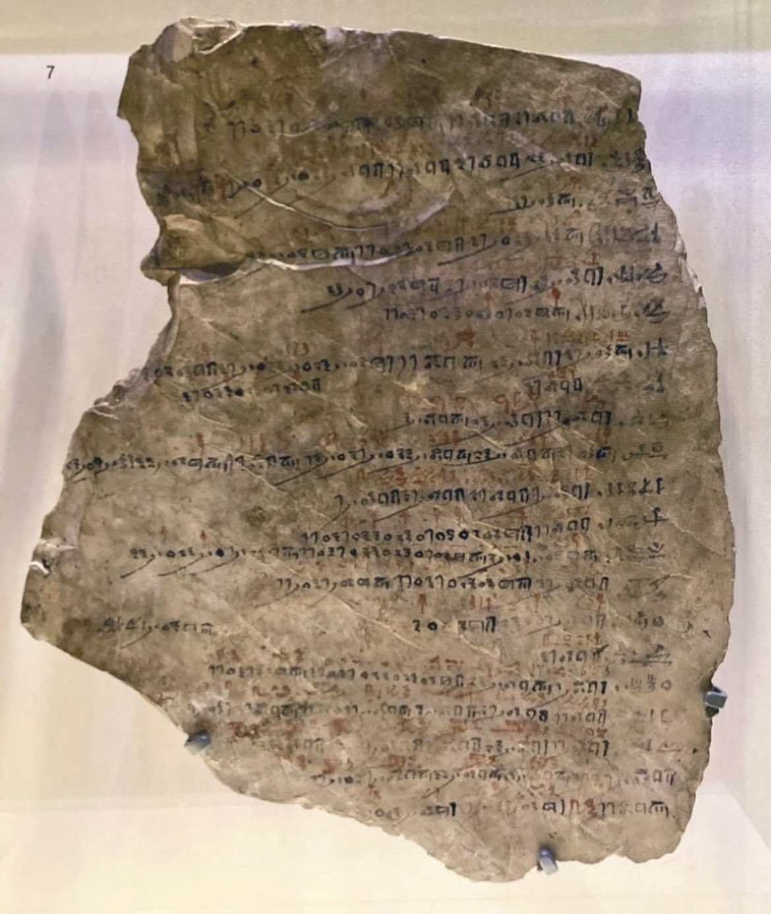
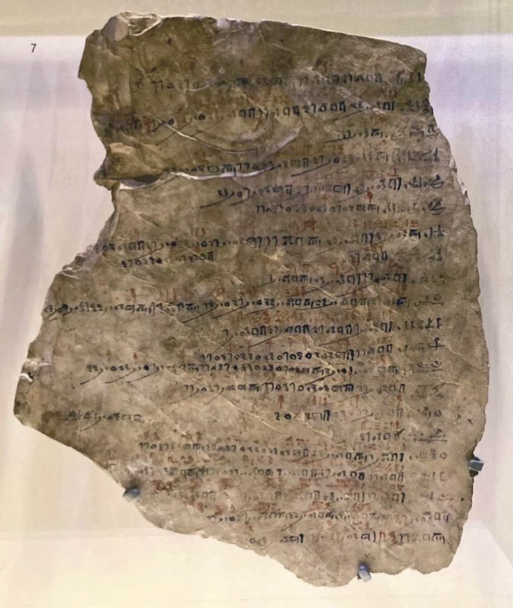

siiky
2023/05/10
2023/05/10
2023/05/12
history,video,book
Mini series about ancient Egypt.
Linked to from this tweet:
This is a 3200-year old attendance sheet found in Deir el-Medina, Egypt. Reasons for worker absence include "embalming brother", "brewing beer" and "bitten by scorpion".